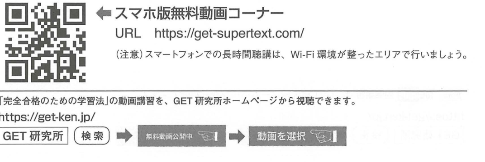

原文
最新問題の一括要約リスト
この学習法で一発合格を手にしよう！
最新問題の一括要約リスト
この学習法で一発合格を手にしよう！
Danh sách tổng hợp các câu hỏi mới nhất
Hãy hướng tới đỗ ngay trong một lần bằng phương pháp học này!
問題1（施工経験記述）については、本書を読み込み、「施工経験記述の考え方・書き方講習」の無料動画を視聴した後、標準的な建築工事の工事概要（どのような建築工事においても共通して実施されることが多い工種が何であるか）を理解し、その工事概要に基づき、工程管理・品質管理・建設副産物の3つの出題分野について、自身の工事経験を基に有効と考える施工管理の方法を書いてみることで、事前に解答を準備することができるため、比較的合格点を獲得しやすい分野となっている。
Đối với Câu 1: Viết kinh nghiệm thi công（施工経験記述）, sau khi đọc kỹ giáo trình này và xem video miễn phí “Khóa hướng dẫn cách tư duy và cách viết phần mô tả kinh nghiệm thi công”, cần hiểu tổng quan của một công trình xây dựng tiêu chuẩn, tức là hiểu những loại công tác thường được thực hiện chung trong hầu hết các công trình xây dựng.
Trên cơ sở tổng quan công trình đó, đối với ba lĩnh vực được ra đề là:
nếu thử tự viết ra những phương pháp quản lý thi công được cho là hiệu quả dựa trên kinh nghiệm công trình của bản thân, thì có thể chuẩn bị trước nội dung trả lời. Vì vậy, đây là lĩnh vực tương đối dễ đạt điểm đỗ.
問題3（施工管理）については、本書を読み込み、「ネットワーク計算の解き方講習」の無料動画を視聴することで、解答に必要となる「タイムスケール」の考え方を身につけることができるようになっている。
Đối với Câu 3: Quản lý thi công（施工管理）, bằng cách đọc kỹ giáo trình này và xem video miễn phí “Khóa hướng dẫn cách giải bài tính network”, người học có thể nắm được cách tư duy về “time scale（タイムスケール）”, là kiến thức cần thiết để giải bài.
問題2（施工計画）・問題4（躯体工事）・問題5（仕上げ工事）・問題6（建築法規）の4つの問題については、過去の試験から繰り返して出題されている問題が多いため、一見すると簡単に思えるかもしれない。しかし、法律や基準書などに書かれている用語や数値について、似たような用語や数値の中から正確に選択したり、工事の施工方法や留意事項などについて、要約して具体的に記述したりすることは、意外と難しいことである。これらの問題で合格点を獲得するためには、過去に出題された問題について、その要点をまとめることが重要となる。
Đối với bốn câu:
có nhiều nội dung được lặp lại từ các kỳ thi trước, nên thoạt nhìn có thể tưởng là đơn giản.
Tuy nhiên, thực tế không dễ:
Để đạt điểm đỗ ở các câu này, điều quan trọng là phải tổng hợp các điểm cốt lõi của những câu đã từng được ra trong quá khứ.
本書では、「最新問題の一括要約リスト」として、過去10年間に出題された施工計画分野・躯体工事分野・仕上げ工事分野・建築法規分野の全問題について、その解答の要点を分野別にまとめている。
また、平成29年度以降の（出題がネットワーク工程表になった後の）施工管理分野についても、出題の要点をまとめている。この「最新問題の一括要約リスト」を手元に置き、「完全合格のための学習法」の無料動画を視聴することで、「要点のまとめ」の学習を、短期間で確実に完了させることができる。
Trong giáo trình này, dưới dạng “Danh sách tổng hợp các câu hỏi mới nhất”, tác giả đã tổng hợp theo từng lĩnh vực các điểm chính của đáp án đối với toàn bộ câu hỏi trong 10 năm gần đây thuộc kế hoạch thi công, công tác phần thân/kết cấu, công tác hoàn thiện và pháp quy xây dựng.
Ngoài ra, đối với lĩnh vực quản lý thi công, giáo trình cũng tổng hợp các điểm ra đề kể từ năm Heisei 29 (2017), tức từ khi dạng câu hỏi được chuyển sang sơ đồ tiến độ network（ネットワーク工程表）. Nếu đặt “Danh sách tổng hợp các câu hỏi mới nhất” này bên cạnh khi học và đồng thời xem video miễn phí “Phương pháp học để đỗ hoàn toàn”, có thể hoàn thành chắc chắn việc học “tổng hợp các điểm trọng yếu” trong thời gian ngắn.
※「最新問題の一括要約リスト」に記載されている問題番号は、令和3年度以降（奇数年度）の第二次検定に基づくものです。令和3年度以降（偶数年度）の第二次検定および令和2年度以前の実地試験（第二次検定の旧称）では、下表のように、問題番号の割り振りが異なります。
Chú thích: Số câu ghi trong “Danh sách tổng hợp các câu hỏi mới nhất” được căn cứ theo cách đánh số của Kỳ thi lần 2 từ năm Reiwa 3 trở đi ở các năm lẻ. Với các năm chẵn từ Reiwa 3 trở đi và kỳ 実地試験 từ Reiwa 2 trở về trước, cách phân bổ số câu khác nhau như bảng dưới đây.
| 区分 | 施工計画 | 施工管理 | 躯体工事 | 仕上げ工事 | 建築法規 |
|---|---|---|---|---|---|
| 令和3年度以降（奇数年度）の第二次検定 | 問題2 | 問題3 | 問題4 | 問題5 | 問題6 |
| 令和3年度以降（偶数年度）の第二次検定 | 問題2 | 問題3 | 問題5 | 問題4 | 問題6 |
| 令和2年度以前の実地試験 | 問題2 | 問題5 | 問題3 | 問題4 | 問題6 |
| Phân loại kỳ thi | Kế hoạch thi công | Quản lý thi công | Phần thân/kết cấu | Hoàn thiện | Pháp quy xây dựng |
|---|---|---|---|---|---|
| Kỳ thi lần 2 từ R3 trở đi, năm lẻ | Câu 2 | Câu 3 | Câu 4 | Câu 5 | Câu 6 |
| Kỳ thi lần 2 từ R3 trở đi, năm chẵn | Câu 2 | Câu 3 | Câu 5 | Câu 4 | Câu 6 |
| 実地試験 từ R2 trở về trước | Câu 2 | Câu 5 | Câu 3 | Câu 4 | Câu 6 |
※本年度（令和8年度）の試験は、奇数年度ではなく偶数年度に該当しますが、躯体工事の前に仕上げ工事を配置するのは不自然である（仕上げ工事は躯体工事の後に行われる）ため、本書では奇数年度の順序で採録しています。
Năm hiện tại Reiwa 8 thuộc năm chẵn, không phải năm lẻ. Tuy nhiên, việc xếp công tác hoàn thiện trước công tác phần thân/kết cấu là không tự nhiên, vì về trình tự thi công, công tác hoàn thiện được thực hiện sau công tác phần thân. Do đó, giáo trình này vẫn sắp xếp nội dung theo thứ tự của năm lẻ.
スマホ版無料動画コーナー
URL https://get-supertext.com/
（注意）スマートフォンでの長時間聴講は、Wi-Fi環境が整ったエリアで行いましょう。
「完全合格のための学習法」の動画講習を、GET研究所ホームページから視聴できます。
GET研究所 → 検索 → 無料動画公開中 → 動画を選択
Góc video miễn phí dành cho điện thoại
URL: https://get-supertext.com/
Lưu ý: Khi xem bài giảng trong thời gian dài bằng điện thoại thông minh, nên thực hiện tại nơi có môi trường Wi-Fi phù hợp.
Video “Phương pháp học để đỗ hoàn toàn” có thể xem từ trang chủ của GET研究所:
GET研究所 → Tìm kiếm → Video miễn phí đang công khai → Chọn video

Phần dưới trang còn có QR code dẫn đến khu vực video miễn phí dành cho điện thoại.
| 日本語 | 読み方 | Tiếng Việt | Giải thích | Liên quan |
|---|---|---|---|---|
| 施工経験記述 | せこうけいけんきじゅつ | Bài viết mô tả kinh nghiệm thi công | Dạng câu tự luận yêu cầu trình bày kinh nghiệm, biện pháp và tư duy quản lý thi công. | 問題1 |
| 工事概要 | こうじがいよう | Tổng quan công trình | Các thông tin cơ bản xác định loại công trình và phạm vi công tác. | 施工経験記述 |
| 工程管理 | こうていかんり | Quản lý tiến độ | Quản lý trình tự, thời gian và quan hệ giữa các công tác. | 施工経験記述 |
| 品質管理 | ひんしつかんり | Quản lý chất lượng | Quản lý để bảo đảm chất lượng thi công theo yêu cầu. | 施工経験記述 |
| 建設副産物 | けんせつふくさんぶつ | Sản phẩm phụ xây dựng | Vật chất phát sinh kèm theo hoạt động xây dựng, gồm vật liệu có thể tái sử dụng, tái chế hoặc cần xử lý. | 施工経験記述 |
| 施工管理 | せこうかんり | Quản lý thi công | Trong trang này đặc biệt liên quan đến bài toán tiến độ network. | 問題3 |
| ネットワーク工程表 | ネットワークこうていひょう | Sơ đồ tiến độ network | Biểu diễn quan hệ trước sau giữa các công tác dưới dạng mạng. | タイムスケール |
| タイムスケール | タイムスケール | Thang thời gian / time scale | Cách biểu diễn tiến độ network trên trục thời gian để xác định thời điểm và số ngày của các công tác. | ネットワーク工程表 |
| 躯体工事 | くたいこうじ | Công tác phần thân/kết cấu | Công tác tạo nên kết cấu chính của công trình. | 問題4/5 |
| 仕上げ工事 | しあげこうじ | Công tác hoàn thiện | Các công tác hoàn thiện thực hiện sau phần kết cấu. | 問題4/5 |
| 建築法規 | けんちくほうき | Pháp quy xây dựng | Các luật, nghị định và quy định liên quan đến xây dựng được kiểm tra trong kỳ thi. | 問題6 |
Logic mà sách đưa ra là: công trình tiêu chuẩn → xác định các công tác phổ biến → chuẩn bị trước nội dung quản lý chất lượng / tiến độ / sản phẩm phụ xây dựng → điều chỉnh theo đề thi thực tế.
Điểm quan trọng là không học thuộc một công trình cụ thể, mà phải hiểu những công tác tiêu chuẩn có khả năng xuất hiện trong nhiều loại công trình.
Từ H29 trở đi, phần 施工管理 sử dụng dạng network schedule. Vì vậy, ngoài hiểu trình tự thi công, cần nắm các khái niệm tính toán tiến độ như thời điểm bắt đầu, tổng thời gian và khoảng dự trữ của công tác.
Phần giải thích này là kiến thức nền để hiểu ý của trang, không phải câu văn nguyên bản của sách.
2 = 施工計画 · 3 = 施工管理 · 6 = 建築法規.
Chỉ có Q4 và Q5 hoán đổi: năm lẻ 4 躯体 → 5 仕上げ; năm chẵn 4 仕上げ → 5 躯体.
R8 là năm chẵn, nên số câu thực tế tuân theo cách phân bổ của năm chẵn. Tuy nhiên, thứ tự trình bày trong giáo trình vẫn theo năm lẻ để giữ trình tự tự nhiên: 躯体工事 → 仕上げ工事.
| {{HEADER_1}} | {{HEADER_2}} |
|---|---|
| {{ROW_KEY}} | {{ROW_RELATION}} |
{{NOTE_CONTENT}}
{{WARNING_CONTENT}}
{{MEMORY_ITEM}}